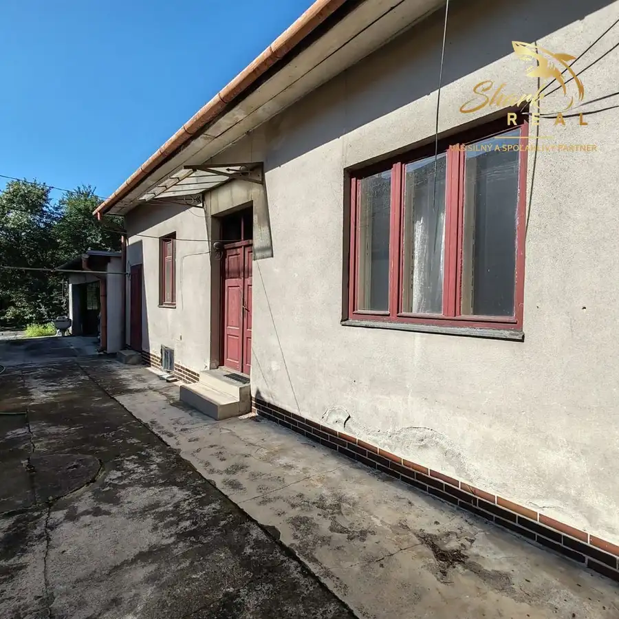
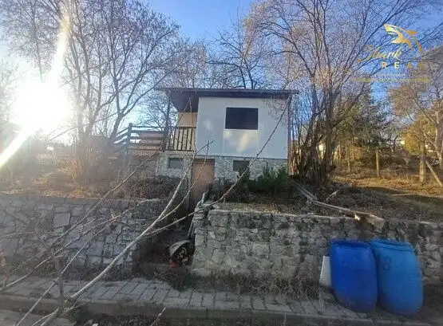

2 izbový byt - kúsok od centra, s loggiou/balkónom ( + MOŽNÁ DOHODA NA CENE !!! )
Topoľčany
- Dispozícia2-izbový
- Plocha48 m²
- Poschodie2. z 4
- StavČiastočná rekonštrukcia
- Energetická triedaC
O nehnuteľnosti
Ponúkame Vám na predaj 2-izbový byt kúsok od centra, s loggiou/balkónom o výmere 48 m², nachádzajúci sa na 2. poschodí zatepleného bytového domu v blízkosti centra mesta Topoľčany.Byt pozostáva z 2 izieb, kuchyne, kúpeľne, samostatného WC a loggie má aj pivnicu. Je v zachovalom stave, ihneď voľný a prešiel čiastočnou rekonštrukciou (plastové okná, čiastočne elektroinštalácia, interiérové a vstupné dvere).V bytovom dome boli vymenené stúpačky a spoločné rozvody. Samozrejmosťou je optický internet.Výborná lokalita – centrum mesta je vzdialené len 4 minúty pešo. V blízkosti sa nachádzajú obchody, škola, škôlka, autobusová zastávka a detské ihrisko. Bezproblémové parkovanie priamo pred domom.Byt je bez tiarch a ihneď k dispozícii.Prečo povedať ÁNO pre túto nehnuteľnosť:+ Výborná lokalita kúsok od centra...+ Loggia / Balkón+ Príjemné prostredie..+ Príjemní susedia...+ Obchody a potraviny sú na skok..+ Neďaleko sa nachádza aj škôlka aj škola...+ MHD zastávka aj vlaková stanica je tiež kúsok...+ Výborná investícia...+ Kompletná občianska vybavenosť...+ Byt je voľný je hneď k dispozícií...+ MOŽNÁ DOHODA NA CENE !!!Možnosť kúpy tejto nehnuteľnosti je aj prostredníctvom - Hypotekárnehoúveru s výhodným financovaním a to priamo v našej realitnejkancelárií.Ceny uvedené v ponuke sú konečné a bez akýchkoľvek ďalších poplatkov.V cene nehnuteľnosti je zahrnuté:- kompletný právny servis spojený s predajom nehnuteľnosti- vyhotovenie rezervačnej, kúpnej zmluvy a návrhu na vklad do katastranehnuteľností.- uhradenie správneho poplatku za návrh na vklad kúpnej zmluvy dokatastra nehnuteľností- poradenstvo / vybavenie financovania / pomoc pri znaleckom posudkuBližšie informácie, prípadne termín obhliadky Vám rád poskytnem natel. č. 0948848411 alebo prostredníctvom emailu bartek@sharkreal.skSHARK REAL - VÁŠ SILNÝ A SPOĽAHLIVÝ PARTNER V OBLASTI REALÍT !!!
Parametre
| Cena vrátane energií | Nie |
|---|---|
| Druh | 2 izbový byt |
| Dátum zverejnenia | 4. 6. 2026 |
| Energetický certifikát budovy | C |
| Podlažie | 2 |
| Počet nadzemných podlaží | 4 |
| Rok výstavby | 1946 |
| Stav nehnuteľnosti | Čiastočná rekonštrukcia |
| Typ | Predaj |
| Typ konštrukcie | Panelová |
| Úžitková plocha | 48 m² |
Kde to je


Mohlo by Vás zaujímať

DomNové10 155 000 €RODINNÝ DOM - ZA CENU BYTU !!! - Topoľčany priamo Topoľčany 850 m² Shark real Vám ponúka rodinný dom v tichej lokalite priamo v Topoľčanoch, Rodinný dom sa skladá z dvoch častí v ľavej časti sú 4 izby, kuchyňa,…
Záhradná chatkaNové5 26 000 €Znížené !!! chatka so záhradou - Partizánske - Návojovce Partizánske 38 m² SHARK REAL Vám ponúka na predaj útulnú záhradnú chatku so slnečnou záhradou o celkovej výmere 407 m², situovanú v pokojnej záhradkárskej osade v…